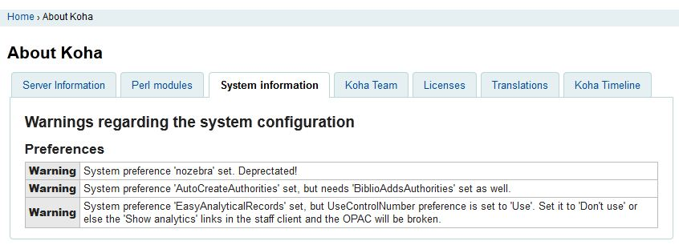

关于 Koha
关于 Koha 区域会给您显示重要的服务器信息以及 Koha 的相关信息。
Get there: More > About Koha
服务器信息
Under the Server information tab you will find information about the Koha version and the machine you have installed Koha on. This information is very important for debugging problems. When reporting issues to your support provider or to the various other support avenues (mailing lists, chat room, etc), it’s always good to give the information from this screen. The time zone is handled via Koha or server configuration. For more information how to specify time zones per instance, see https://wiki.koha-community.org/wiki/Time_Zone_Configuration
Perl 模块
In order to take advantage of all of the functionalities of Koha, you will need to keep your Perl modules up to date. The Perl modules tab will show you all of the modules required by Koha, the version you have installed and whether you need to upgrade certain modules.

Items listed in bold are required by Koha, items highlighted in red are missing completely and items highlighted in yellow simply need to be upgraded.
系统信息
This tab will provide you with warnings if you are using system preferences that have since been deprecated or system preferences that you have set without other required preferences
